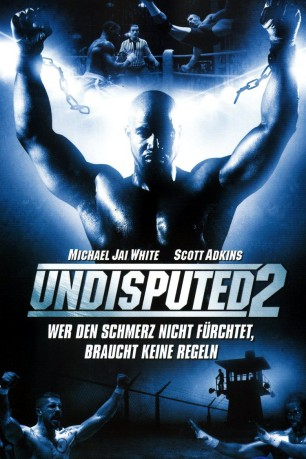

IMDB-Wertung: 7.1 / 10
IMDB-Wertung: 7.1 / 10  Metascore:
Metascore: 
Sequel to the 2002 film. This time, Heavyweight Champ George "Iceman" Chambers is sent to a Russian Jail on trumped-up drug charges.
Alternativ: Undisputed 2: Last Man Standing (Englischer Titel)
 IMDB-Wertung: 7.1 / 10 Metascore:
Sequel to the 2002 film. This time, Heavyweight Champ George "Iceman" Chambers is sent to a Russian Jail on trumped-up drug charges.
Jahr: 2006
Dauer: 98 Minuten
FSK: 18
Land: USA Studio: New Line Home VideoTonspuren: DTS - ,
Untertitel:
Auflösung: 1080p (1920x1040) Größe: 8140 MB
Genre: Action, Krimi, Drama, Sport
Regisseur: Isaac Florentine
Drehbuch: Boaz Davidson, James Townsend, David N. White
Soundtrack: Stephen Edwards
Darsteller:
 Michael Jai White als George Chambers
Michael Jai White als George Chambers Scott Adkins als Yuri Boyka
Scott Adkins als Yuri Boyka Ben Cross als Steven Parker
Ben Cross als Steven Parker Mark Ivanir als Gaga
Mark Ivanir als Gaga Ken Lerner als Phil
Ken Lerner als Phil Silvio Simac als Davic
Silvio Simac als Davic Valentin Ganev als Warden Markov
Valentin Ganev als Warden Markov Velizar Binev als Kiril
Velizar Binev als Kiril Raicho Vasilev als Guard
Raicho Vasilev als Guard Trayan Milenov-Troy als Opponent
Trayan Milenov-Troy als Opponent Radoslav Parvanov als Gaga's Crew Member #2
Radoslav Parvanov als Gaga's Crew Member #2 Danko Jordanov als Gaga's Crew Member #4
Danko Jordanov als Gaga's Crew Member #4 Borislav Iliev als Boyka's Crew Member #2
Borislav Iliev als Boyka's Crew Member #2 Velizar Peev als Boyka's Crew Member #3
Velizar Peev als Boyka's Crew Member #3 Atanas Srebrev als Dmitri
Atanas Srebrev als DmitriDatei: X:\FSK18-Collections\Undisputed\Undisputed 2 - Last Man Standing (2006, FSK18, 1920x1040).mkv seit 29.05.2015
Festplatte: FSK18
 Es gibt insgesamt 7 Filme in der Gruppe 'FSK18-Collections\Undisputed'
Es gibt insgesamt 7 Filme in der Gruppe 'FSK18-Collections\Undisputed'